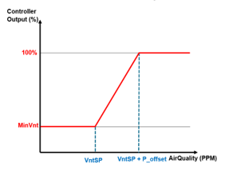
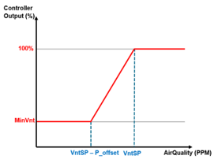

VAV 通气控制 (VavVntCtl11)
Overview
应用功能》VAV ventilation control 11" (VavVntCtl11) 与 VAV 送风终端盒配合进行通风和 /or 室内空气质量控制。
Function
多种通风控制模式可供选择；该行为可以通过参数来选择。
Ventilation mode
每个房间的通风模式可设置为：
- Off
- Minimum (Constant air flow)
- Dcv (Demand controlled ventilation) 1)
- Dcv & Min (Demand controlled ventilation with a minimum air flow limit) 1)
1)房间内需要空气质量传感器。
下表显示了最小通风口和空气质量参数的出厂默认设置：
植物模式 | 通风方式 | 空气质量 | AirFlMin |
|---|---|---|---|
1 Off | 离开 |
|
|
2 保护* | 离开 | 1500 | 50 |
3 经济舱* | 离开 | 1500 | 50 |
4 预舒适* | 直流电压 | 1100 | 50 |
5 舒适* | 最小和直流电压 | 900 | 50 |
6 热身 | 离开 |
|
|
7 冷静下来 | 离开 |
|
|
8 房间低温保护 | 离开 |
|
|
9 <未使用> |
|
|
|
10自然冷却 | 取决于 ROpMod | 取决于 ROpMod | 取决于 ROpMod |
11 夜间降温 | 离开 |
|
|
12 快速通气 | s/a Comfort | s/a Comfort | s/a Comfort |
13 <未使用> |
|
|
|
14 紧急关闭 | 离开 |
|
|
15 仅最大供气体积流量（正压） | 离开 |
|
|
16 仅最大抽气体积流量（负压） | 离开 |
|
|
17 Purge | 离开 |
|
|
*对于这些模式，参数可以单独调整。
NOTICE

VavVntCtl11 中的最小通风气流设置
VAV PID 控制器不会启用，除非通风流量设定点高于最大空气流量设置的 7%（硬编码）。
- If minimum ventilation is required, set minimum ventilation air flow setting(s) >7% of the largest maximum air flow setpoint.
Minimum ventilation setup
最小通风气流设置应 > 最大气流设定点值的 7%（通常为冷却气流最大值，VavSuAirFlMaxC 位于 AF VavSu.xx 段中）。标称空气体积流量参数（AirFlNom，也位于 AF VavSu.xx 段中）应设置为等于该最大空气流量设定点值。
在以下示例中，冷却流量最大值 (VavSuAirFlMaxC) 假定为最大空气流量设定点。
Example 1
在此示例中，假设 AirFlNom 和 VavSuAirFlMaxC 均已设置为1000 m3/h，以及最小通气设定点对象（VavSuAflMinVnt，位于段 AF VavSu.xx 中）has been set tozero。将 AF 段中的 VavSuAflMinVnt 设置为零，允许此 AF（VAV 通风控制、VavVntCtl11）中的最小通风参数设置根据房间操作模式（舒适、预舒适、经济、保护）而变化。见表。
房间模式通风流量值 | 通气模式设置 | 结果 |
|---|---|---|
AirFlMinRCmf = 100 m3/h | CmfCnf = Min vent & DCV | 在舒适模式下，通风流量的下限为 100 m3/h，并且可能会随着空气质量需求而上升 (DCV)。 |
AirFlMinRPcf = 80 m3/h | PcfCnf = Min vent | 在 Pre-Comfort 中，通风流量 = 80 m3/h. |
AirFlMinREco = 60 m3/h | EcoCnf = Min vent | 在经济舱中，通风流量将为zero，因为 AirFlMinREco 被错误地设置为 60 m3/hwhich is less than 7% of AirFlNom(AirFlNom was set to 1000 m3/h). |
AirFlMinRPrt = 80 m3/h | PrtCnf = Off | 在保护中，模式设置 (PrtCnf) 已设置为Off。当通风模式设置 = 关闭时，无论参数流量值（在本例中为 AirFlMinRPrt）或 VavSuAflMinVnt 的值如何，该房间模式的通风流量都将为零。 |
Example 2
在此示例中，假设 AirFlNom 和 VavSuAirFlMaxC 均已设置为1000 m3/h，以及位于 AF VavSu.xx 段中的最小通气设定点对象 (VavSuAflMinVnt)has been set to 100 m3/h.
房间模式通风流量设置 | 通气模式设置 | 结果 |
|---|---|---|
AirFlMinRCmf = 125 m3/h | CmfCnf = Min vent | 在舒适模式下，通风流量将为 125 m3/h. |
AirFlMinRPcf = 90 m3/h | PcfCnf = Min vent | 在 Pre-Comfort 中，通风流量 =100m3/h (not 90)because VavSuAflMinVnt was set to 100，大于 90； （90 和 100 均 >7% AirFlNom，因此它们都是有效（可用）值；当有效设置发生冲突时，较大的值获胜）。 |
AirFlMinREco = 50 m3/h | EcoCnf = Min vent | 在经济模式下，通风流量将 = 100 m3/h，因为 VavSuAflMinVnt 设置为 100。 |
AirFlMinRPrt = 50 m3/h | PrtCnf = Off | 在保护中，模式设置 (PrtCnf) 已设置为Off。当通风模式设置 = 关闭时，无论参数流量值（在本例中为 AirFlMinRPrt）或 VavSuAflMinVnt 的值如何，该房间模式的通风流量都将为零。 |
Demand Controlled Ventilation with Proportional Control - Configuration
典型的 DCV（需求控制通风）仅使用 PID 控制回路的“P”。 （PID：比例增益；积分；微分）。
DCV 还使用室外空气来维持良好/bad 室内空气质量之间的 ppm 差异。
当室内空气质量达到或高于上限 ppm 设定值时，PID 回路输出应为 100%。可以通过调整通风控制器对象（VntCtr，通风控制器）的属性来配置此控制行为。
设置 VntCtr 属性如下：
积分：0
导数：0
控制器输出偏移：100
当测量值处于设定值时，偏移控制器输出参数确定 PID 输出。参考规格文档并进行相应设置。
Examples of Minimum VS Maximum Ventilation at Setpoint | |
左图显示了控制器在默认设置下的行为示例。右图显示了使用前面在 DCV 与比例控制部分中列出的设置配置 VntCtr 属性后控制器行为的示例。 | |
设定点的最小通风量（默认） | 设定点的最大通风量 |
 |  |
Periodic air flush
可使用参数来配置通风气流的周期性循环。可以定期启用通风以获得最小气流，时间长度为 TiOnDutyCyc。见图。

可以为每种操作模式配置占空比关闭间隔的长度（DutyCycCmf、DutyCycPcf、DutyCycEco、DutyCycPrt）。占空比为 0 分钟（默认）意味着该功能被禁用。
Note
如果使用排风温度传感器测量室温，则空气必须流动以确保正确测量有效室温。在这种情况下，可以使用定期空气冲洗来定期提供气流。
Exception handling
对于空气质量控制，通风模式必须设置为 Dcv 或 Min & Dcv，VavSuAvlVnt 必须为 Yes，空气质量传感器必须为 Valid。如果传感器失效或缺失，则通气模式不能为 Dcv 或 Min & Dcv；在本例中，VavSuVntReq 设置为最小值。
Configuration
 Objects
Objects
描述 | 目的 | 类型 | 默认值 |
|---|---|---|---|
Setpoint room air quality for comfort | SpAQualRCmf | ACnfVal | 900 [ppm] |
Setpoint room air quality for pre-comfort | SpAQualRPcf | ACnfVal | 1100 [ppm] |
Setpoint room air quality for economy | SpAQualREco | ACnfVal | 1500 [ppm] |
Setpoint room air quality for protection | SpAQualRPrt | ACnfVal | 1500 [ppm] |
 Parameters
Parameters
描述 | 范围 | 默认值 |
|---|---|---|
Comfort configuration 1:Off | CmfCnf | 4:Minimum ventilation & Demand-controlled ventilation |
Pre-Comfort configuration 枚举见CmfCnf | PcfCnf | 3:Demand-controled ventilation |
Economy configuration 枚举见CmfCnf | EcoCnf | 2:Minimum ventilation |
Protection configuration 枚举见CmfCnf | PrtCnf | 2:Minimum ventilation |
Minimum room air volume flow for comfort | AirFlMinRCmf | 50 [m3/h] |
Minimum room air volume flow for pre-comfort | AirFlMinRPcf | 50 [m3/h] |
Minimum room air volume flow for economy | AirFlMinREco | 50 [m3/h] |
Minimum room air volume flow for protection | AirFlMinRPrt | 50 [m3/h] |
Air volume flow unit | AirFlUnit | [m3/h] |
Duty cycling in comfort | DutyCycCmf | 0 [min] |
Duty cycling in pre-comfort | DutyCycPcf | 0 [min] |
Duty cycling in economy | DutyCycEco | 0 [min] |
Duty cycling in protection | DutyCycPrt | 0 [min] |
Switch-on time duty cycling | TiOnDutyCyc | 6 [min] |
Interface
界面 | 描述 | 类型 | 参考号 | 拥有者 |
|---|---|---|---|---|
PrSpVnt | Present ventilation setpoint | APrcVal | ● | - |
VntCtr | Ventilation controller | 控制器 | ● | - |
RCtl | Room control | GrpMaster | ◉ | 房间 |
SpAQualRCmf | Setpoint room air quality for comfort | ACnfVal | ● | - |
SpAQualRPcf | Setpoint room air quality for pre-comfort | ACnfVal | ● | - |
SpAQualREco | Setpoint room air quality for economy | ACnfVal | ● | - |
SpAQualRPrt | Setpoint room air quality for protection | ACnfVal | ● | - |
Engineering and commissioning
NOTICE
VavVntCtl11 中的最小通风气流设置
VAV PID 控制器不会启用，除非通风流量设定点高于最大空气流量设置的 7%（硬编码）。
- If minimum ventilation is required, set minimum ventilation air flow setting(s) >7% of the largest maximum air flow setpoint.